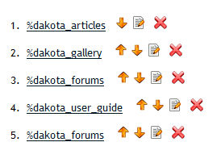
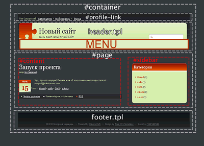
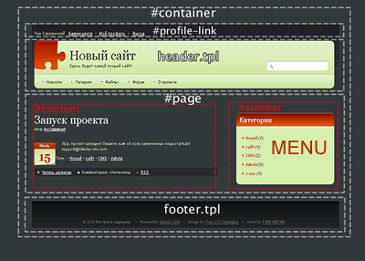

Работа с меню
- В этом разделе можно создавать, редактировать и перемещать пункты меню.
- Для использования многоязычных названий пунктов используйте запись title вида %dakota_articles.
- Все доступные слова и фразы вы можете найти в файле dakota_lang.php Подробнее о кастомизации языков
- Меню не проверяет ссылки. Если вы сделали ссылку на страницу, а позже скрыли ее в админ-центре или удалили , пользователь увидит страницу 404.
- Если пункт меню содержит подпункты, то при его удалении они будут удалены вместе с ним.
- Внешние ссылки открываются в новом окне.
- Изменения вступают в силу назамедлительно.
- Укажите строку ‹?= MENU; ?&rsaquo в header.tpl.
- Не рекомендуется использовать подпункты без предварительного создания стилей или скриптов, раскрывающих их
- Смотри след. пункт для информации о стилях
- Удалите строку ‹?= MENU; ?&rsaquo из header.tpl
- В файле \widgets\00_menu.php укажите $widget_info['active'] = 1;
- Использовать подпункты можно без создания стилей.
- Меню выводится в виде ‹ul› ‹li› списка. Можно создать любое количество пунктов в корне меню, в каждом можно создать свой список.
- Корневые элементы имеют id вида 'menu_id' и класс "menu_root", последний пункт имеет класс
"menu_root_last"
Информация
Пример меню в админ-центре

Стили меню
| Расположение наверху страницы | Расположение в боковой панели |
|  |  |
|
|
|
Пример вывода меню из 3 пунктов, во втором 2 подпункта.
‹ul›
‹li id="menu_1" class="menu_root"›
‹a href="/gallery"›Gallery‹/a›‹/li›
‹li id="menu_2" class="menu_root"›‹a href="/articles"›Links‹/a›
‹ul›
‹li›‹a href="http://dakota-cms.com/" target="_blank"›dakota-cms.com‹/a›‹/li›
‹li›‹a href="http://wap7.ru" target="_blank"›wap7.ru‹/a›‹/li›
‹/ul›
‹/li›
‹li id="menu_3" class="menu_root_last"›‹a href="/forums"›Forum‹/a›‹/li›
‹/ul›